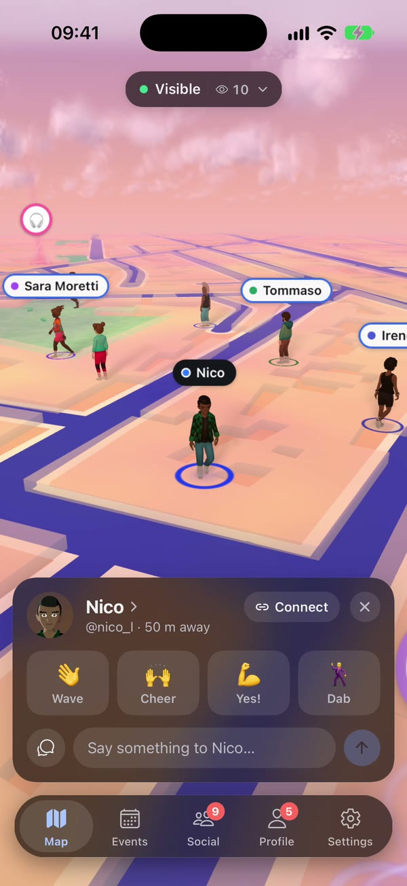
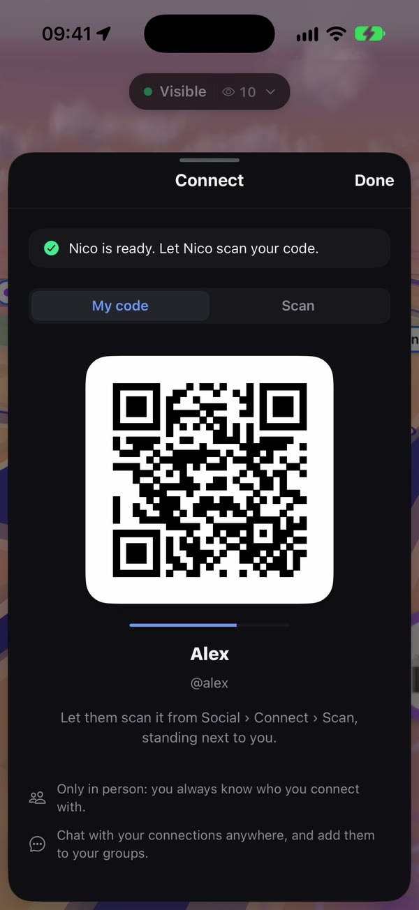
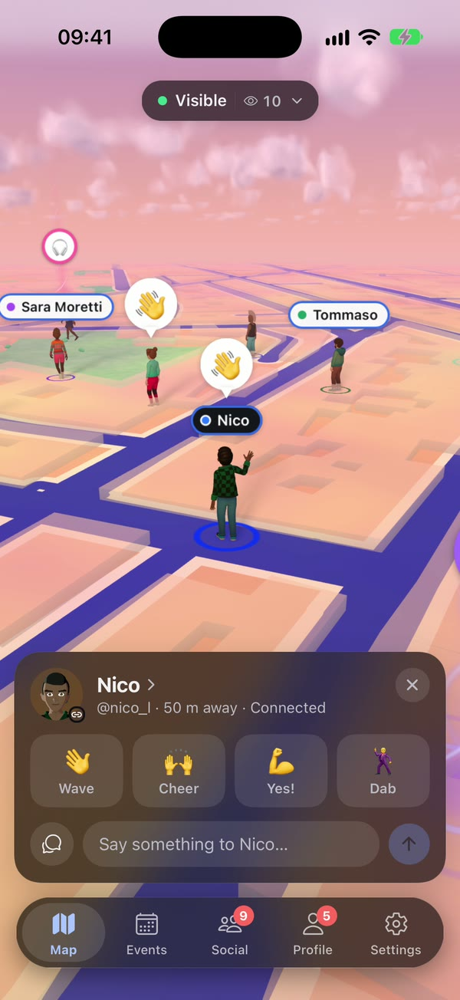

A live 3D map of your neighbourhood. The people around you walk on it as their avatars, and anyone can pin an event that everyone nearby sees as a beam of light. Designed and built end to end by Lorenzo Mezzabarba: app, 3D map and backend.
Real streets from OpenStreetMap, drawn like a model you can turn in your hand. The sky keeps the real hour and the real weather where you stand: rain when it rains, street lamps when the evening comes.
OpenStreetMap vector tiles packed as PMTiles and turned into geometry on the phone. The resolution adapts on the fly to hold 42 frames a second on older phones; the weather comes in every half hour, the sun and moon from their real positions.
See who's out, right now.
The people around you walk on the map as their avatars, where they really are, as it happens. Tap someone to wave or say hi; tap yourself to say something to everyone nearby, in a bubble over your head.
Positions travel over one WebSocket, at most once a second. You see the 25 nearest people, your connections first, drawn as one batched crowd from avatars the server bakes in advance.
Anyone can put an event on the map.
Press and hold the map for something happening right now, or plan one for any day in the next month, with a photo, a full description and how far it should reach. No venue, no followers needed. Then make it yours: how its beam moves, its colour and symbol, the look of its page.
Events keep 15 m apart so beams never stack, and each person runs five at most. Every beam style is a branch of one shader, picked per instance, so a hundred differently dressed events still draw in one pass.
You only see what reaches you.
Each event reaches as far as its organizer chooses, from 100 to 800 metres, so a barbecue stays in its street and a concert can light up the whole district. Tap a beam and the camera flies over, or read them all in one list: what's on now at the top, the ones your friends are going to marked.
PostGIS finds the events whose reach covers you; a paid promotion widens it up to 10 km, charged a day at a time. The flight re-solves its framing every frame, so the event lands above its card.
Meet first. Connect after.
There is no search and no friend request. To connect, you stand next to someone: one phone shows a code, the other scans it. Everyone you're connected with is someone you actually met.
Each code is 128 random bits, valid for 10 seconds, single use and rotated every 5. The server checks blocks and distance, then tells the other phone over the WebSocket.

Tap Connect on someone right there with you

Show your code, they scan it

Connected: chat from anywhere
The plan before, the photos after.
Chats with your connections, groups, and one for every event you join: pin the meeting point, put the time to a vote. Afterwards everyone who went adds their pictures to the event's shared album.
Each message is numbered by a single update of its chat's row, and sending twice with the same id gives one message. Photos go straight to storage through a signed URL and are re-encoded without their metadata before anyone sees them.
Show up as you.
A 3D avatar built from hundreds of pieces walks for you on the map, so friends recognise you across the square. Your profile shows it the way you set it: a backdrop, what it stands on, what floats around it and the greeting it plays.
A catalog of 700+ wearables. For the map the server bakes each look into one mesh and one texture atlas, so a crowd costs a handful of draw calls; the profile reuses one 3D view, kept warm between screens.
Your position is never stored.
Invisible by default. Every time you open the map, until you choose otherwise.
Close by only. People within about a kilometre see you, while you're on the map and one minute after.
Your area, not your spot. Approximate mode shows a circle of a few hundred metres instead of where you stand.
No history. The server keeps only your latest position, in memory, and forgets it when you leave.
Yours to take or delete. Download a copy of your data, or delete your account and everything in it, from Settings.
How it's built
One person, three codebases that talk to each other: the mobile app, the 3D map that runs inside it, and the backend behind both. The map and the avatars rely on no outside provider: there is no map SDK, tile service or avatar platform underneath, only open data and open-source parts.
Mobile appExpo, React Native, iOS and Android
3D mapthree-geo-play on three.js, in a WebView
RESTone WebSocket
Java backendSpring Boot and Jetty: REST, gateway, live presence, jobs
PostgreSQLPostGIS
Object storageR2, libvips worker
PushAPNs, FCM
The app
Expo Router, Reanimated and a liquid-glass tab bar on iOS 26. An outbox for messages sent offline, per-account caches with ETags, light and dark themes, and a WebView bridge that replays its state when the map reloads.
The map
Drawn by three-geo-play, a three.js library written for this map, from vector tiles cut out of OpenStreetMap data and served by the project's own tile server. Shaders give the city its hour: sky, clouds reprojected at their depth, fog, rain, lightning, street edges that light up at dusk, each one measured on real phones and kept or cut by its cost.
The avatars
Put together from Decentraland's open-source wearables by the project's own pipeline and avatar server: textures recompressed for each phone's GPU (ASTC), geometry compacted with meshopt, files kept on the phone after the first download.
The backend
Java 25 with Error Prone and NullAway from the first line. Who sees whom is computed in memory on a spatial index; money moves under row locks with a ledger; jobs that follow a change are written in its own transaction.
Made by Lorenzo Mezzabarba.
Product, design and code: the app, the map and the backend, and this page, shot in the iOS simulator with the app itself. The repository has the full source, the design documents and the tests.